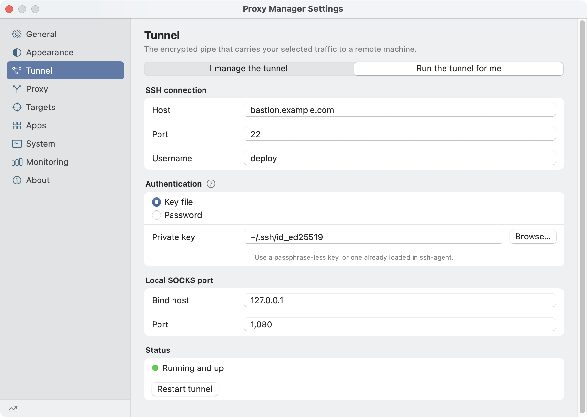
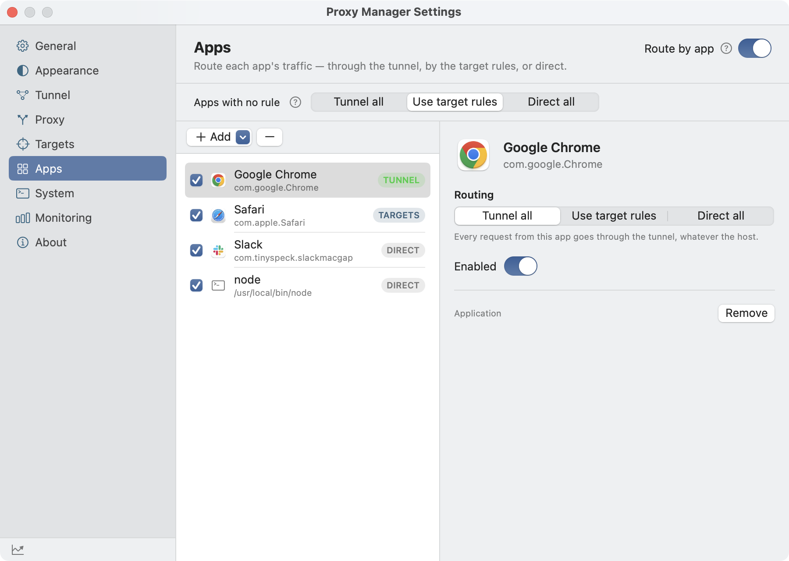

Per-request detail
Method, host, route, status, source port, and bytes. Metadata only.
Local allow-list + per-app proxy for macOS
A local proxy that routes the hostnames you allow — or the apps you pick — through your SOCKS5 tunnel, and everything else straight out.


Run the tunnel for me
Already have a SOCKS5 proxy? Point at it. Don’t? Give Proxy Manager your SSH host and it runs and supervises the tunnel for you — restarting it automatically if the connection drops.
Live decisions, sizes, and timings — on your machine.
Method, host, route, status, source port, and bytes. Metadata only.

Exact hosts or wildcards like *.deepseek.com. Changes apply without a restart.

Tunnel all, follow your host list, or go direct — per app. An app rule wins over the allow-list.

Use any SOCKS5 proxy you already run — for example ssh -D 1080.

Pick a preset or start empty; add your own hosts later.
One local hop decides where each connection goes.
HTTP_PROXY/HTTPS_PROXY for CLI tools.connect(2) directly, so they never re-enter the system proxy this app sets.CONNECT tunnels are relayed byte-for-byte with backpressure, so SSE and LLM token streams arrive as they are produced. WebSocket sessions (ws:// and wss://) relay full-duplex too.127.0.0.1 and blocks non-loopback clients from private destinations.CONNECT streams are relayed byte-for-byte.127.0.0.1; private destinations are blocked for non-loopback clients.Proxy Manager isn’t notarized by Apple, so macOS may block the first launch. Open System Settings → Privacy & Security and click Open Anyway for Proxy Manager. You only need to do this once; the app updates itself normally afterwards.
Yes — Proxy Manager routes to a SOCKS5 proxy that you provide. Make one with ssh -D 1080 user@host, or switch on “Run the tunnel for me” and let the app create and supervise the SSH tunnel.
A lower-level pipe that carries traffic to a remote machine. Your apps speak HTTP to the local proxy; the local proxy speaks SOCKS5 to your tunnel, so CLI tools that can’t do SOCKS5 directly still work.
No. Only the hostnames on your allow-list — plus any apps you set to Tunnel all. Everything else connects directly, so the rest of your browsing is unaffected.
Yes. In Settings → Apps, each app can be set to Tunnel all, Use target rules (follow the host allow-list), or Direct all, and apps with no rule use a default you choose. You can also set the frontmost app's mode straight from the menu bar. It's off until you turn it on.
Yes. It writes HTTP_PROXY/HTTPS_PROXY into your shell rc files, so new terminal sessions route through it automatically.
Yes. wss:// (WebSocket over TLS) is carried by the same opaque CONNECT tunnel as other HTTPS traffic, and ws:// upgrades are forwarded, so the origin switches protocols and frames flow both ways for the life of the connection.
No. It’s an allow-list HTTP proxy, not a system-wide tunnel or packet-level VPN. It never touches traffic that isn’t on your list.
A tiny crash watchdog restores your original proxy settings within milliseconds, so your internet is never left pointing at a dead local port.
Proxy Manager checks for new versions via Sparkle in the background and always asks before installing. You can change the frequency or turn checks off in Settings → General.
No. TLS is passed through untouched; only metadata (host, size, timing, status) is recorded, and only on your disk.
Proxy Manager is free and MIT-licensed. If it’s useful, a star helps others find it.